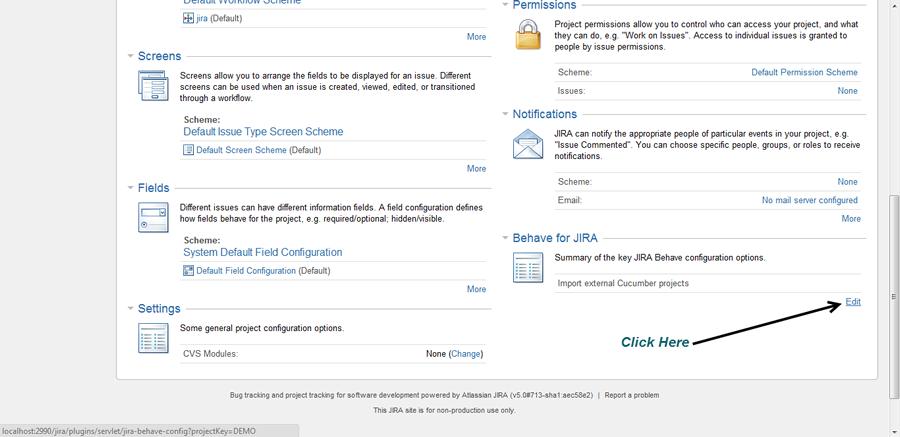

Bringing your existing Cucumber Projects into Behave is easy. Go to the administration area of the project you wish to import to, and scroll down to locate the Behave for JIRA import link. On this page you can select one or more .ZIP files containing your Cucumber .feature files. You may also drag and drop these files onto the drop area on the page.
Once the files have been selected, a dialog will appear showing the progress of the import. Once uploaded, you will be notified when the feature files have been successfully loaded into the project. These features and their corresponding scenarios will then be ready to use.
